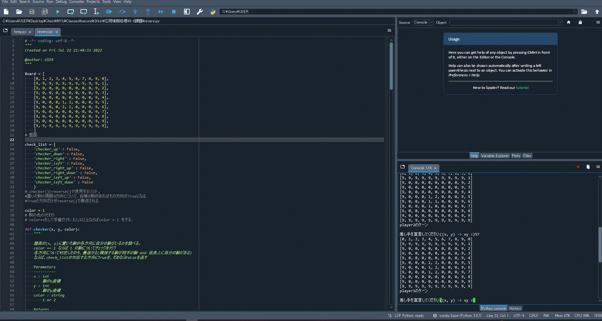
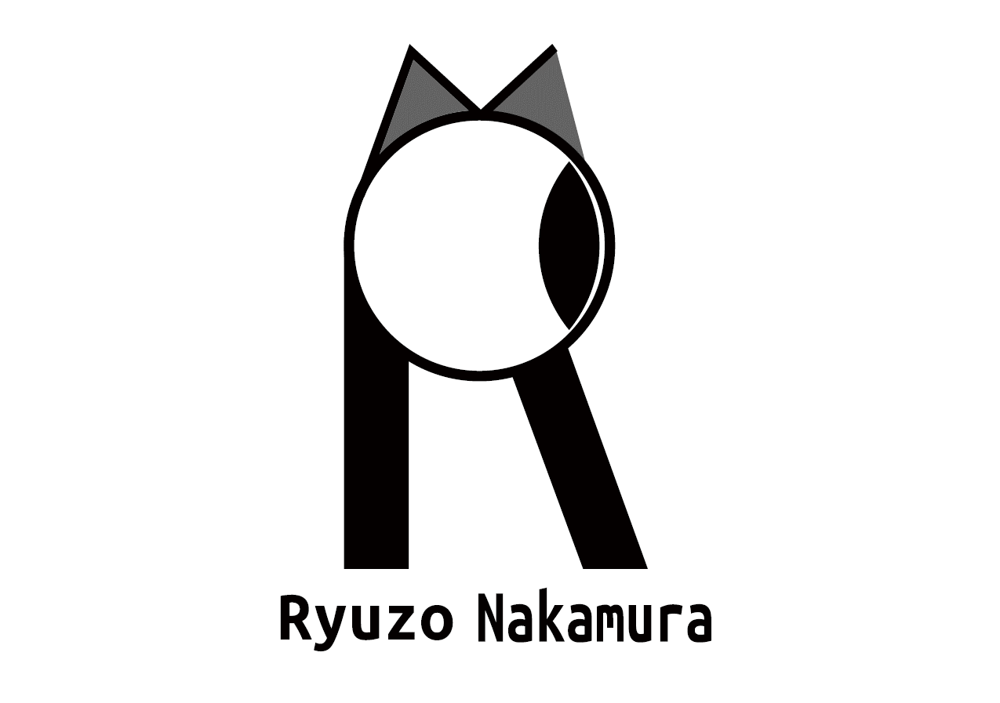
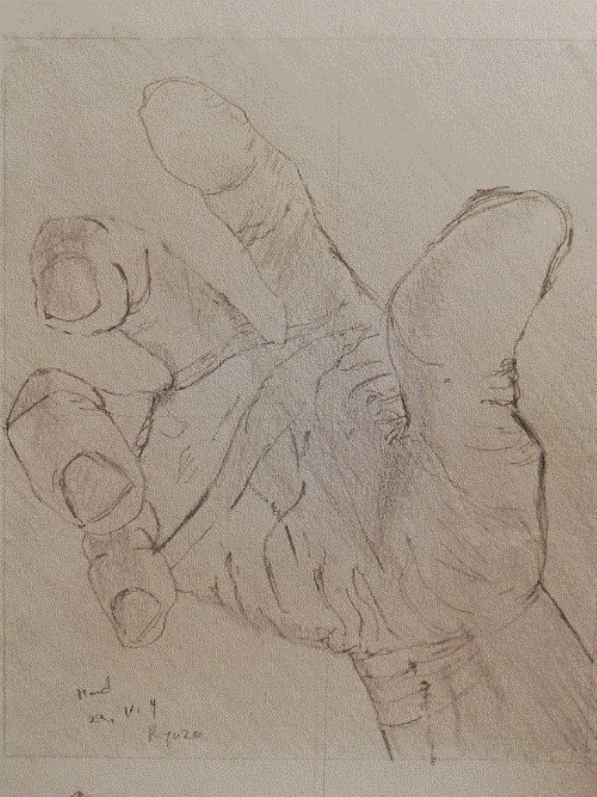
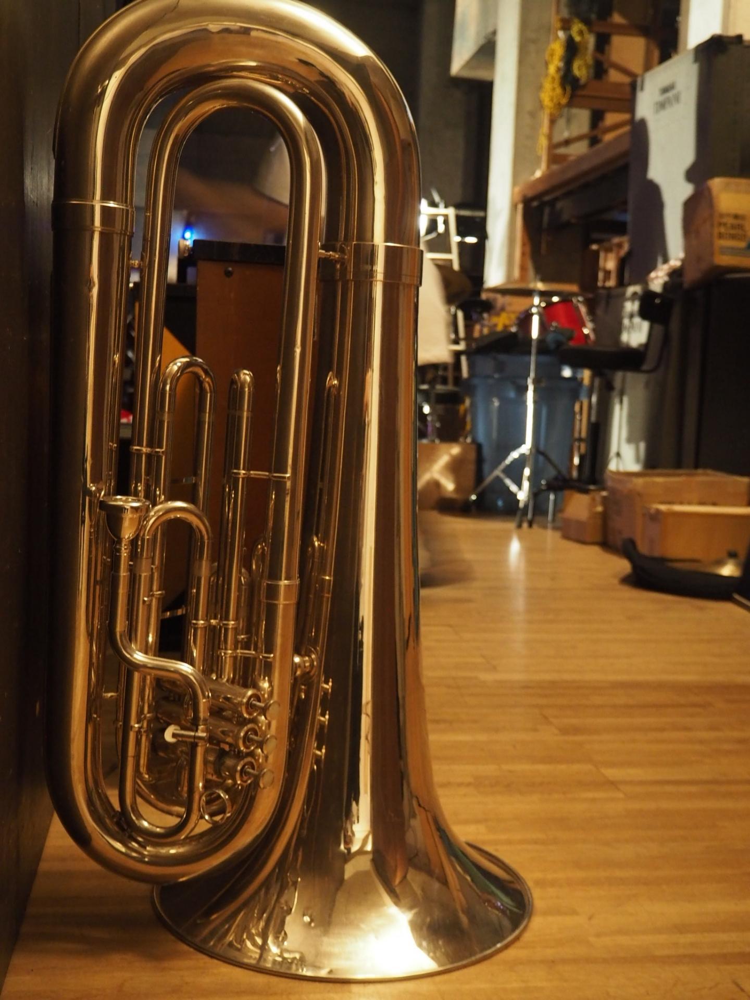
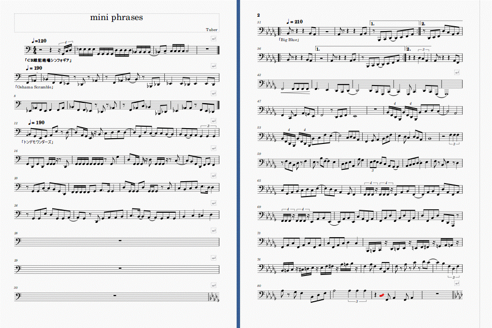

WORKS
Game
じゃんけん
2年前期「情報と環境」にて、Scratchを用いたゲームを制作

リバーシ
2年前期「応用情報処理」の最終課題として、リバーシをPythonで実装
Visual

ロゴ制作
2年後期「価値創造デザイン演習Ⅱ」で、Adobe Illustratorを用いたロゴを制作。

デッサン
グラフィック制作のため、デジタル・アナログでイラスト制作を行う
Music

チューバ
中学校からチューバを始め、現在は一般のマーチングバンドで活動している。

楽譜製作
日常生活の中で聞いて気に入ったフレーズを楽譜にまとめている。